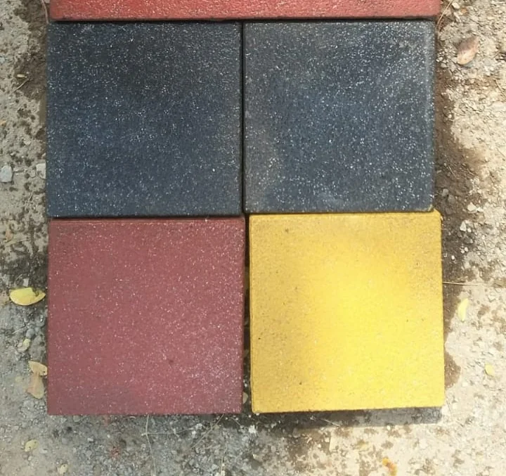

Everlast is Best Short Blast Pavers Manufacturer In Pune,also Supplier,Exporter,Trader,Wholesaler of Shot Blast Paver Blocks,Short Blasted Anti Skid Paver Blocks, premium Short Blast paver blocks,Hexagonal Paver Blocks.
Run your hand over a freshly laid paver and you can usually tell how it was finished. Some are smooth and shiny. Others feel gritty, a bit like fine stone. That gritty feel comes from blasting, and it’s the signature of Short Blast Pavers. They look more natural than a plain concrete block, they grip better underfoot, and they age gracefully instead of looking tired after a couple of seasons. For anyone planning a driveway, a plaza or a garden path, that finish is worth understanding before the order goes in.
A short blast paver is a precast concrete block whose top surface has been blasted to give it a textured, slightly aged look. People use pavers like these for driveways, pavements, plazas, parking lots and building perimeters, and the finish suits both modern and traditional spaces.
Every concrete paver starts life with a thin, smooth layer of cement paste on top. It looks neat, but it’s also the part that gets slick when wet. Blasting removes that layer. The process exposes the fine aggregate underneath, so the surface turns slightly rough and picks up a soft, stone-like texture.
The result is a paver that looks a lot like natural stone but comes in a uniform, factory-made shape. That’s a handy combination when you’re covering a large area and want it to look consistent. Here’s what the term covers:
-
The block: A precast concrete paver, made in a factory to a consistent size so it fits neatly with its neighbours.
-
The finish: A blasted top face with a fine, even texture.
-
The look: Softer and more natural than a smooth, machine-pressed surface.
-
The feel: A bit of grit underfoot, which adds grip. Walk across it barefoot and you’ll feel the texture, but it won’t scrape.
-
Other finishes: Rough, matte and rubber mould pavers give different textures, so compare samples before choosing.
Smooth pavers look good in the showroom, but they can get slippery, show scuffs quickly and look dated. A short blast finish solves most of that, and it does so without changing how the paver is laid. If you’re deciding between finishes, these are the points that usually tip the choice:
-
Better grip: The textured top gives shoes and tyres more to hold on to, especially when wet. That matters near entrances.
-
A natural look: It resembles lightly weathered stone, so the paving blends into gardens and buildings.
-
Hides wear: Small marks, dust and the odd stain are less obvious than on a smooth surface, so the paving looks cared for even between cleanings.
-
Matches many styles: Works with bungalows, offices, plazas and public parks. A stone-like finish rarely looks out of place.
-
Easy to lay: Pavers go down block by block, and any single piece can be lifted and replaced. There’s no curing wait, so the area opens quickly.
-
Low maintenance: No sealing or painting is needed. A broom and the occasional wash is enough.
-
Good value: You get a stone-like finish without paying natural stone prices, and you can cover a large area on a sensible budget.
Short blast pavers go where people walk and vehicles roll, anywhere you want paving that looks good and doesn’t get slippery. Rain, sun and constant traffic all test a surface, so it helps to match the finish to the place. These are the usual places:
-
Driveways: Home and commercial driveways, where the texture helps tyres grip in the rain.
-
Pavements and footpaths: Public walkways that need a safe surface for people of every age, from schoolchildren to older residents.
-
Plazas and public spaces: Open areas where the paving is part of the design and gets noticed by everyone who walks through.
-
Parking lots: Surfaces that carry cars every day and need to stay tidy, even when oil drips and tyres leave marks.
-
Building perimeters: The paved strip around offices, schools and residential blocks.
-
Gardens and patios: Paths and seating areas where a stone-like look suits the setting and the grip keeps morning dew from being a problem.
-
Entrances and lobbies: Outdoor approaches that set the first impression of a building.
A few things separate a short blast paver from an ordinary one, and most of them come down to the surface and how it was made:
-
Blasted top face: A fine texture that comes from removing the smooth cement layer.
-
Exposed fine aggregate: The small stones in the concrete become part of the look, which is what gives the surface its stone-like character.
-
Fine, even texture: The blasted face has a gentle grit rather than a smooth shine.
-
Precast consistency: Factory-made blocks keep their size and shape from one batch to the next, so the laid surface looks even.
-
Interlocking-friendly laying: Pavers fit together tightly to form a firm, even surface, with joints that can be filled with sand.
-
Concrete strength: Concrete pavers are made for foot and vehicle traffic outdoors, and they’re laid on a prepared base to carry the load.
-
Made in India: Produced for local conditions and projects.
A paving surface should look good on day one and still look good years later. Choosing a finish carefully makes that far more likely, and it saves you from re-doing the work. Here’s what you gain:
-
Safer surfaces: The texture reduces slips when the ground is wet, which protects visitors, staff and children.
-
Lasting good looks: The finish hides scuffs and everyday dirt.
-
A premium appearance: The stone-like look lifts the whole property, and first impressions count for a lot.
-
Easy repairs: A damaged block can be taken up and replaced without relaying the whole area, which keeps repair costs low.
-
Low upkeep: Sweep it, hose it down and move on.
-
Flexible design: The finish works with many layouts and patterns, so you can lay straight lines, curves or borders.
-
Value for money: A tough surface that needs little care costs less over time.
It’s a precast concrete paver whose top face has been blasted to remove the smooth cement layer. That exposes the fine aggregate and gives a textured, stone-like finish.
The texture gives more grip than a smooth paver, so it’s a good choice for driveways, pavements and areas that get rain. Grip still depends on the surface being kept clean, so sweep away moss, mud and loose dirt now and then.
Driveways, pavements, plazas, parking lots, building perimeters, gardens and entrances all suit this finish. It’s a flexible choice for both homes and public spaces.
Rough, matte and rubber mould finishes each give a different texture. Short blast gives a blasted, stone-like look, so ask for samples of each and compare them in daylight.
Share the area to be paved, the type of traffic and the look you want. Ask about the sizes, thicknesses and colours available, because these vary by product. A site photo and a rough area measurement will speed things up.